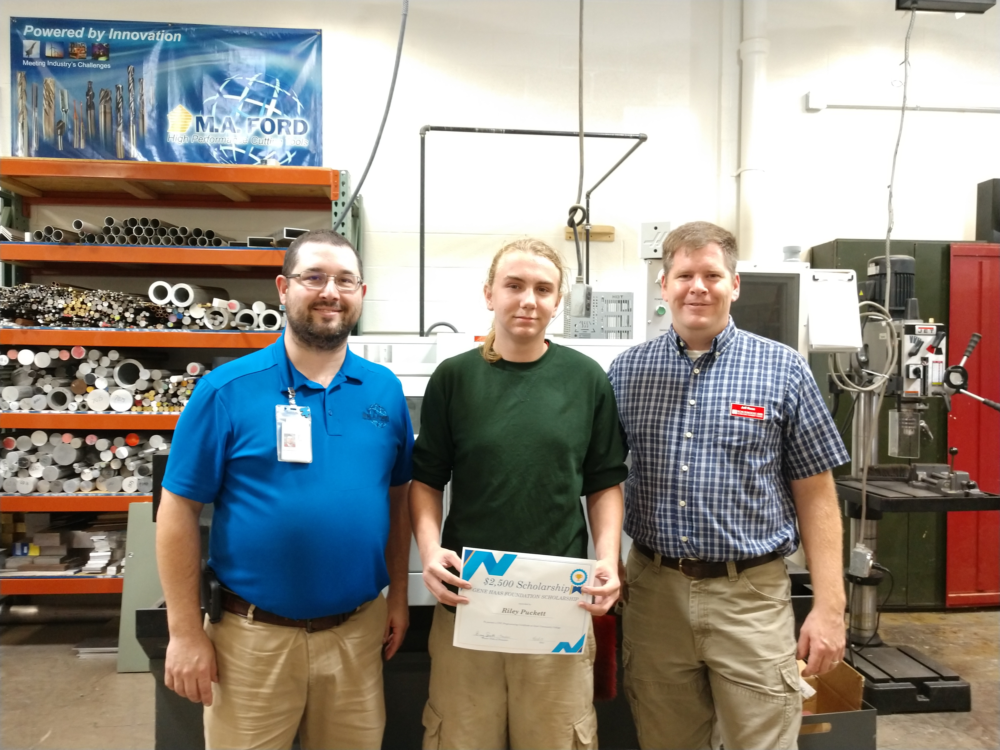
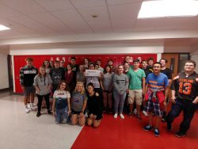
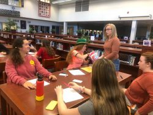

Riley Puckett, a West High senior, received a $2,500 scholarship from the Gene Haas Foundation. Riley is currently taking classes at the Blong Technology Center (Scott Community College) for CNC Machining / Programming. Pictured (Left to Right): Mr. Greg Smith, Riley Puckett, Jeff Rose (Scott Community College – Blong Technology Center).
Mrs. Hawkinson was a lucky winner of a $200 mini grant from DuTrac Community Credit Union. She can use the grant for classroom supplies. Congratulations!
Today, the WINGS Club created their WHY statements. This was led by Kirby Marcure who is a member of the Junior League of the Quad Cities, Program Manager @ Businessolver, and co-owner EZ Window and Door.
